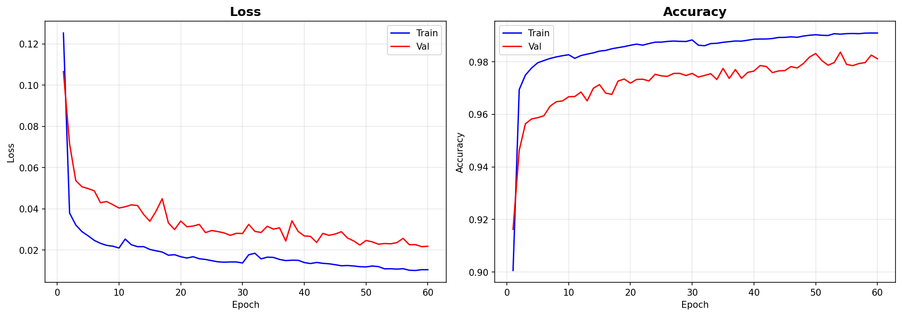
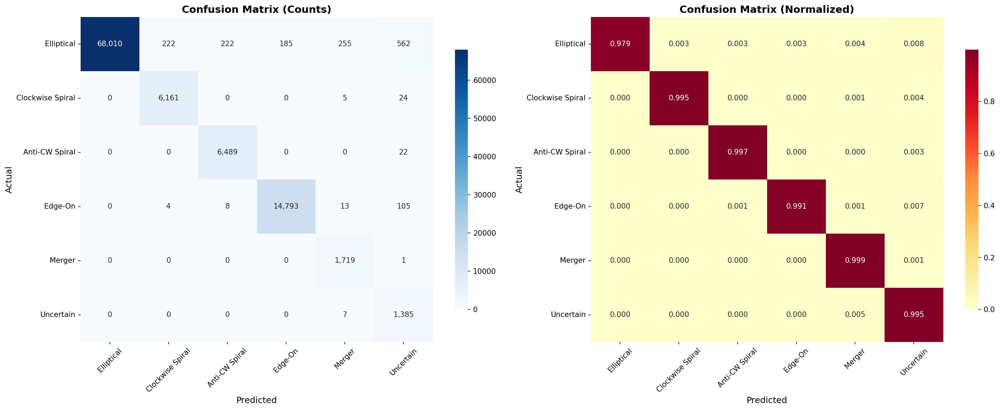

Deep Learning Galaxy Morphology Classification Pipeline using EfficientNet-B0
View GitHub RepoWelcome to the Galaxy Zoo image classification system. Space is vast, and categorizing galaxies by humans is time-consuming. Using a state-of-the-art Convolutional Neural Network (EfficientNet-B0) with transfer learning, this pipeline can automatically identify the morphological structure of galaxies with remarkable accuracy.
The system was trained on a comprehensive JWST/NASA style dataset, learning to distinguish the subtle differences between spiral arms, elliptical structures, and merging irregularities.
Elliptical galaxy with a perfectly spherical shape, showing no visible disk or spiral structure.
Slightly elongated elliptical galaxy, featuring a smooth texture without forming spiral arms.
Highly elongated elliptical galaxy resembling a cigar-like visual footprint.
Disk galaxy viewed directly edge-on, appearing as a narrow band of dense light.
Spiral galaxy with a prominent central bar structure connecting the glowing spiral arms.
Classic spiral galaxy with arms emerging directly from the central dense bulge.
Galaxies with disturbed or asymmetrical shapes, often indicating recent gravitational interactions or mergers.
The model was trained over 15 epochs, utilizing Cosine Annealing learning rate schedules, random data augmentations (flips, color jitters, rotations), and achieved outstanding validation accuracy.


Running the pipeline locally is straightforward. Configure your environment and dataset, train the model, and then invoke predictions.
python train.pyThis will download/load the pre-organized dataset, initiate the training routine, and output the checkpoints and graph plots to the output/ directory.
python predict.pyPlace raw `.jpg` or `.png` images in the new_images/ folder. The predict script processes them and generates beautifully formatted CSV and Excel files containing exact probability percentages across all 7 classes.